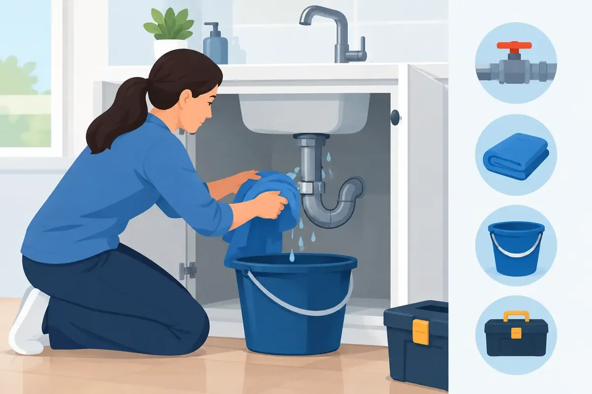

A burst pipe rarely waits for a convenient time. It may happen while your family is getting ready for church, during a busy workday, or after everyone has gone to bed. In an emergency plumbing situation, the first few minutes can make a meaningful difference in limiting water damage, protecting your belongings, and keeping everyone safe.
The goal is not to repair a serious plumbing problem yourself. The goal is to safely control the situation until a qualified plumber can assess the cause and make a lasting repair. Knowing what to do before trouble starts gives homeowners, landlords, and property managers a calmer path through a stressful moment.
What Counts as an Emergency Plumbing Problem?
Some plumbing issues can wait for a scheduled appointment. A dripping faucet, a slow drain, or a toilet that occasionally runs may waste water or signal a developing problem, but they do not always require an after-hours response. An emergency is a problem that threatens your property, health, safety, or ability to use essential plumbing.
A pipe that is actively leaking or has burst is an emergency, especially when water is spreading through walls, ceilings, floors, or electrical areas. A failed water heater that is leaking heavily, a sewer backup entering the home, and a toilet overflow that will not stop are also urgent concerns. No hot water can be an emergency for some households and commercial properties, particularly when it affects children, older adults, tenants, food service operations, or sanitation requirements.
Gas-related concerns require an added level of caution. If you smell gas near a water heater or other appliance, leave the area, avoid switches and open flames, and contact the gas utility or emergency services as appropriate before arranging plumbing service. Do not attempt to relight a pilot light or investigate a suspected gas leak on your own.
The First Emergency Plumbing Steps to Take
When water is actively flowing where it should not, turn off the water source if you can do so safely. For a toilet overflow, the shutoff valve is usually on the wall or floor behind the toilet. For a leaking sink, look inside the cabinet below. If the leak is coming from a fixture, appliance, or visible supply line, shutting off that local valve may keep water available to the rest of the house.
If you cannot find the local shutoff, or the leak is severe, turn off the main water supply. Many homes have a main shutoff near the water meter, in a utility room, garage, basement, crawl space, or on an exterior wall. Every responsible adult in the household should know where it is and test whether it turns freely before an emergency occurs.
After stopping the water, move furniture, rugs, electronics, and valuables away from the affected area. Use towels, buckets, or a wet vacuum only when it is safe to do so. If water is near outlets, appliances, a breaker panel, or exposed wiring, stay clear and consider shutting off power to the affected area only if you can reach the electrical panel without entering standing water.
Take a few clear photos or short videos once the immediate danger is controlled. Documentation can help your plumber understand what happened and may be useful for insurance purposes. Then call for professional help. A live person on the phone can help you communicate the problem clearly and determine the right next step.
How to Handle Common Plumbing Emergencies
Burst or leaking pipes
A burst pipe can release a surprising amount of water in a short time. Shut off the main water supply, then open a faucet at the lowest practical point in the home to help relieve pressure and drain remaining water from the lines. Avoid cutting into walls or attempting a permanent patch with tape. Temporary measures can sometimes slow a leak, but they can also conceal the extent of damage or fail without warning.
In cold weather, a frozen pipe deserves prompt attention even before it bursts. Never use an open flame to thaw plumbing. Gentle warmth may help in certain accessible areas, but a plumber can identify whether the pipe is frozen, split, or at risk of failure.
Overflowing toilet
Remove the tank lid and press the flapper closed if water continues to flow into the bowl. Then close the shutoff valve behind the toilet. Do not keep flushing to see whether the clog clears. If wastewater has reached floors, baseboards, or nearby rooms, treat it as a sanitation concern and keep children and pets away from the area.
A plunger may resolve a minor clog, but repeated overflows, multiple slow drains, gurgling fixtures, or sewage odors can point to a main sewer line problem. That is the time to stop using water throughout the building and call for service.
Sewer backup
A sewer backup is one of the clearest reasons to request emergency plumbing service. Wastewater can carry harmful bacteria, and the source may be a blockage, damaged sewer pipe, root intrusion, or an issue beyond the building's plumbing. Avoid using toilets, showers, sinks, dishwashers, and washing machines until the problem is diagnosed.
Do not use chemical drain cleaners in an attempt to clear a suspected sewer blockage. These products can damage certain pipes, create hazards for anyone working on the line, and rarely solve a serious main-line obstruction.
Water heater trouble
If a water heater is leaking from the tank or connections, turn off the cold-water supply valve above the unit if accessible. For an electric water heater, shut off power at the breaker before doing anything else around the unit. For a gas unit, follow the manufacturer's shutdown instructions if you can do so safely, but do not proceed if you smell gas.
A small amount of water near a water heater can come from a relief valve, condensation, a drain connection, or a failing tank. The distinction matters. A trained plumber can determine whether a repair is appropriate or whether replacement is the wiser, safer investment.
What Not to Do While You Wait
Emergency calls often become more expensive when a well-meaning temporary repair creates a larger problem. Avoid pouring harsh chemicals into a blocked drain, especially if another product may already be in the line. Do not use tools that you are unfamiliar with, remove water-heater components, or keep resetting a breaker that trips after a plumbing leak.
It is also wise to avoid turning the water back on repeatedly to test a repair. A leak inside a wall or below a slab may not reveal itself immediately. Let the technician inspect the system, explain the options, and make the repair with the right materials.
For commercial properties, notify the appropriate manager or maintenance contact and protect customers or employees from wet floors and restricted restroom areas. A quick, clear response can reduce disruption while helping preserve a safe environment.
Preparing Your Home Before an Emergency
The best time to locate a shutoff valve is not during a midnight leak. Walk through your home now and identify the main water shutoff, fixture shutoffs, water heater connections, and electrical panel. Label valves if needed, particularly in rental homes, multi-unit properties, or buildings where several people share maintenance responsibility.
Routine plumbing inspections can catch warning signs before they become emergencies. Slow drains, unexplained increases in water bills, moisture under cabinets, water-heater rust, discolored water, and recurring toilet clogs all deserve attention. Smart water shutoff valves can also add protection by monitoring unusual water use and automatically stopping water in some leak events.
Regular maintenance is especially valuable for older Middle Tennessee homes, properties with mature trees near sewer lines, and businesses that depend on reliable hot water or public restrooms. The right plan depends on the age of the plumbing, the building's use, and whether small problems have already begun to appear.
Choosing an Emergency Plumber You Can Trust
During a plumbing emergency, speed matters, but so does the quality of the response. Look for a company that answers the phone, provides clear communication, respects your home or business, and explains pricing before work begins. You should feel comfortable asking what caused the failure, what repair is recommended, and how to prevent a repeat problem.
Angle Stop Plumbing serves Middle Tennessee with 24/7 emergency response, experienced technicians, upfront pricing, and a family-friendly No Foul Language Guarantee. Whether the issue involves a leak, drain, sewer line, water heater, or another essential system, a professional diagnosis helps protect your property from a quick fix that does not last.
Keep your plumber's number where your household or team can find it. A calm first response, a working shutoff valve, and a courteous professional on the way can turn a frightening plumbing failure into a manageable repair.